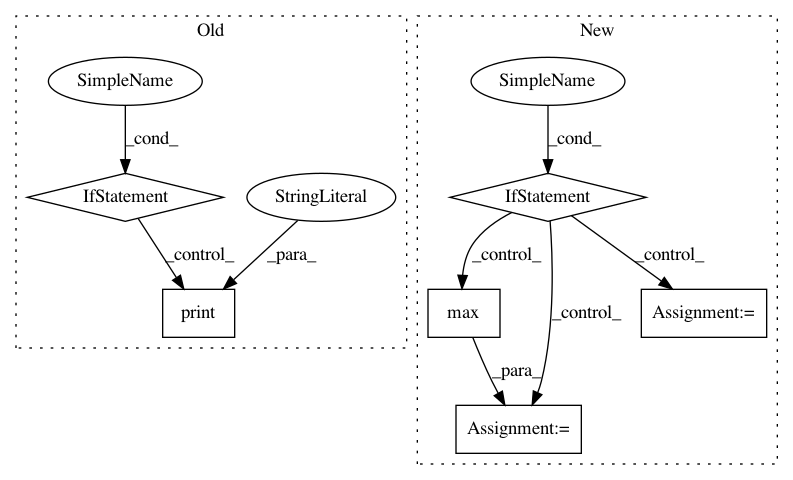

934291e74098fe8d09a528c95c043b43bcac9575,cnvlib/antitarget.py,,get_background,#Any#Any#Any#Any#,13
Before Change
// But filter out untargeted allosomes/contigs
is_autosome = re.compile(r"(chr)?\d+$")
for untgt_chr in set(access_chroms) - set(target_chroms):
if not is_autosome.match(untgt_chr):
print("Skipping untargeted chromosome", untgt_chr,
file=sys.stderr)
del access_chroms[untgt_chr]
else:
// Chromosome accessible sequence regions not known -- use heuristics
// (chromosome length is endpoint of last probe; skip initial
// <magic number> of bases that are probably telomeric)
After Change
// But filter out untargeted allosomes/contigs
untgt_chroms = set(access_chroms) - set(target_chroms)
is_autosome = re.compile(r"(chr)?\d+$")
if any(is_autosome.match(c) for c in target_chroms):
// Autosomes have numeric names -- keep them
chroms_to_skip = [c for c in untgt_chroms
if not is_autosome.match(c)]
else:
// Alternative contigs have long names -- skip them
max_tgt_chr_name_len = max(map(len, target_chroms))
chroms_to_skip = [c for c in untgt_chroms
if len(c) > max_tgt_chr_name_len]
for untgt_chr in chroms_to_skip:
logging.info("Skipping untargeted chromosome %s", untgt_chr)
del access_chroms[untgt_chr]
else:
In pattern: SUPERPATTERN
Frequency: 5
Non-data size: 6
Instances
Project Name: etal/cnvkit
Commit Name: 934291e74098fe8d09a528c95c043b43bcac9575
Time: 2016-02-22
Author: eric.talevich@gmail.com
File Name: cnvlib/antitarget.py
Class Name:
Method Name: get_background
Project Name: rflamary/POT
Commit Name: d793f1f73e6f816458d8b307762675aa9fa84d22
Time: 2017-08-04
Author: stan.chambon@gmail.com
File Name: ot/da.py
Class Name: BaseTransport
Method Name: fit
Project Name: xinntao/BasicSR
Commit Name: ee1a026a7ad52bd8e807024e41d70276028c59e2
Time: 2020-11-27
Author: wxt1994@126.com
File Name: test_scripts/test_face_dfdnet.py
Class Name: FaceRestorationHelper
Method Name: get_face_landmarks_68
Project Name: rflamary/POT
Commit Name: 62b40a9993e9ccca27d1677aa1294fff6246e904
Time: 2017-09-01
Author: stan.chambon@gmail.com
File Name: ot/da.py
Class Name: BaseTransport
Method Name: fit
Project Name: ray-project/ray
Commit Name: 244aafdcf89ae814975c8c4e3faf0bd4995c7878
Time: 2020-09-05
Author: sven@anyscale.io
File Name: rllib/utils/exploration/tests/test_curiosity.py
Class Name: OneHotWrapper
Method Name: observation